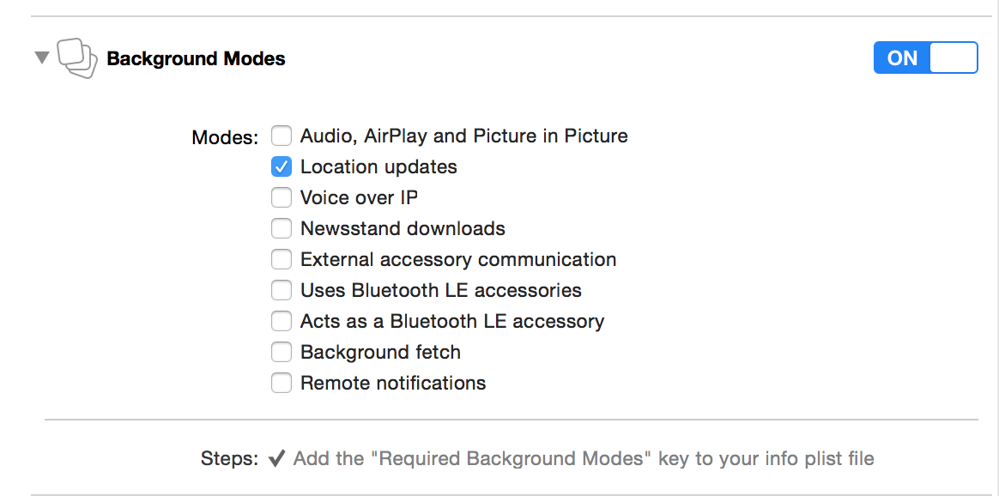

iOS8.0之前的定位
前台定位
导入CoreLocation框架和对应的主头文件
#import <CoreLocation/CoreLocation.h>
创建CLLcationManager对象,并设置代理
_locationM = [[CLLocationManager alloc] init];
_locationM.delegate = self;
调用CLLcationManager对象的startUpdatingLocation方法进行更新用户位置
[_locationM startUpdatingLocation];
实现代理方法,接收位置参数
-(void)locationManager:(nonnull CLLocationManager *)manager didUpdateLocations:(nonnull NSArray<CLLocation *> *)locations
后台定位
在前台定位基础上,勾选后台模式update locations(如下图)

iOS8.0+ 至 iOS9.0之前的定位
前台定位
导入CoreLocation框架和对应的主头文件
#import <CoreLocation/CoreLocation.h>
创建CLLcationManager对象,并设置代理 请求前台定位授权,并配置KEY
_locationM = [[CLLocationManager alloc] init];
_locationM.delegate = self;
if ([[UIDevice currentDevice].systemVersion floatValue] >= 8.0)
{
[_locationM requestWhenInUseAuthorization];
}

调用CLLcationManager对象的startUpdatingLocation方法进行更新用户位置
[_locationM startUpdatingLocation];
实现代理方法,接收位置参数
-(void)locationManager:(nonnull CLLocationManager *)manager didUpdateLocations:(nonnull NSArray<CLLocation *> *)locations
后台定位
各种授权状态讲解
switch (status) {
// 用户还未决定
case kCLAuthorizationStatusNotDetermined:
{
NSLog(@"用户还未决定");
break;
}
// 问受限
case kCLAuthorizationStatusRestricted:
{
NSLog(@"访问受限");
break;
}
// 定位关闭时和对此APP授权为never时调用
case kCLAuthorizationStatusDenied:
{
// 定位是否可用（是否支持定位或者定位是否开启）
if([CLLocationManager locationServicesEnabled])
{
NSLog(@"定位开启，但被拒");
}else
{
NSLog(@"定位关闭，不可用");
}
break;
}
// 获取前后台定位授权
case kCLAuthorizationStatusAuthorizedAlways:
// case kCLAuthorizationStatusAuthorized: // 失效，不建议使用
{
NSLog(@"获取前后台定位授权");
break;
}
// 获得前台定位授权
case kCLAuthorizationStatusAuthorizedWhenInUse:
{
NSLog(@"获得前台定位授权");
break;
}
default:
break;
}
iOS9.0 定位补充
前台定位
导入CoreLocation框架和对应的主头文件
#import <CoreLocation/CoreLocation.h>
创建CLLcationManager对象,并设置代理 请求前台定位授权,并配置KEY
_locationM = [[CLLocationManager alloc] init];
_locationM.delegate = self;
if ([[UIDevice currentDevice].systemVersion floatValue] >= 8.0)
{
[_locationM requestWhenInUseAuthorization];
}
调用CLLcationManager对象的startUpdatingLocation方法进行更新用户位置
[_locationM startUpdatingLocation];
实现代理方法,接收位置参数
-(void)locationManager:(nonnull CLLocationManager *)manager didUpdateLocations:(nonnull NSArray<CLLocation *> *)locations
后台定位
方案一:在APP处于前台定位授权场景下,勾选后台运行模式update locations (如下图) 并且,调用以下方法,设置允许后台定位
if ([[UIDevice currentDevice].systemVersion floatValue] >= 9.0) {
_locationM.allowsBackgroundLocationUpdates = YES;
}

方案二:请求前后台定位授权,并配置KEY
[_locationM requestAlwaysAuthorization];

补充
// 作用：按照定位精确度从低到高进行排序，逐个进行定位。如果获取到的位置不是精确度最高的那个，也会在定位超时后，通过代理告诉外界
// 注意：一个要实现代理的定位失败方法； 二：不能与startUpdatingLocation同时使用
[_locationM requestLocation];
CLLocation对象详解
//coordinate （当前位置所在的经纬度）
//altitude （海拔）
//speed （当前速度）
//-distanceFromLocation: （获取两个位置之间的直线物理距离）
指南针
导入CoreLocation框架和对应的主头文件
#import <CoreLocation/CoreLocation.h>
创建CLLcationManager对象,并设置代理
_locationM = [[CLLocationManager alloc] init];
_locationM.delegate = self;
调用CLLcationManager对象的startUpdatingHeading方法进行更新设备朝向
[_locationM startUpdatingHeading];
实现代理方法,获取方向参数,根据方向参数旋转图片
-(void)locationManager:(nonnull CLLocationManager *)manager didUpdateHeading:(nonnull CLHeading *)newHeading
{
// 获取当前设备朝向(磁北方向)
CGFloat angle = newHeading.magneticHeading;
// 转换成为弧度
CGFloat radian = angle / 180.0 * M_PI;
// 反向旋转指南针
[UIView animateWithDuration:0.5 animations:^{
self.compassView.transform = CGAffineTransformMakeRotation(-radian);
}];
}
- 注意: 获取用户的设备朝向,不需要用户进行定位授权
区域监听
导入CoreLocation框架和对应的主头文件
#import <CoreLocation/CoreLocation.h>
创建CLLcationManager对象,并设置代理,请求授权(iOS8.0之后才需要) 请求前后台定位授权,并配置KEY
_locationM = [[CLLocationManager alloc] init];
_locationM.delegate = self;
if ([[UIDevice currentDevice].systemVersion floatValue] >= 8.0)
{
[_locationM requestAlwaysAuthorization];
}

调用CLLcationManager对象的startMonitoringForRegion:方法进行监听指定区域
// 创建区域中心
CLLocationCoordinate2D center = CLLocationCoordinate2DMake(29.12345, 131.23456);
// 创建区域（指定区域中心，和区域半径）
CLCircularRegion *region = [[CLCircularRegion alloc] initWithCenter:center radius:1000 identifier:@"小码哥"];
// 开始监听指定区域
[self.locationM startMonitoringForRegion:region];
实现代理方法,获取区域进入或者离开状态
// 进去监听区域后调用（调用一次）
-(void)locationManager:(nonnull CLLocationManager *)manager didEnterRegion:(nonnull CLRegion *)region
{
NSLog(@"进入区域---%@", region.identifier);
[manager stopMonitoringForRegion:region];
}
// 离开监听区域后调用（调用一次）
-(void)locationManager:(nonnull CLLocationManager *)manager didExitRegion:(nonnull CLRegion *)region
{
NSLog(@"离开区域---%@", region.identifier);
}
(反)地理编码
导入CoreLocation框架和对应的主头文件
#import <CoreLocation/CoreLocation.h>
创建CLGeocoder对象
_geoC = [[CLGeocoder alloc] init];
- 地理编码
方案1:
// 地理编码方案一：直接根据地址进行地理编码（返回结果可能有多个，因为一个地点有重名）
[self.geoC geocodeAddressString:@"盛达商务园" completionHandler:^(NSArray<CLPlacemark *> * __nullable placemarks, NSError * __nullable error) {
// 包含区，街道等信息的地标对象
CLPlacemark *placemark = [placemarks firstObject];
// 城市名称
// NSString *city = placemark.locality;
// 街道名称
// NSString *street = placemark.thoroughfare;
// 全称
NSString *name = placemark.name;
self.addressDetailTV.text = [NSString stringWithFormat:@"%@", name];
self.latitudeTF.text = [NSString stringWithFormat:@"%f", placemark.location.coordinate.latitude];
self.longtitudeTF.text = [NSString stringWithFormat:@"%f", placemark.location.coordinate.longitude];
}];
方案2:
// 地理编码方案二：根据地址和指定区域两个条件进行地理编码（更加精确）
[self.geoC geocodeAddressString:@"广州" inRegion:nil completionHandler:^(NSArray<CLPlacemark *> * __nullable placemarks, NSError * __nullable error) {
// 包含区，街道等信息的地标对象
CLPlacemark *placemark = [placemarks firstObject];
self.addressDetailTV.text = placemark.description;
self.latitudeTF.text = [NSString stringWithFormat:@"%f", placemark.location.coordinate.latitude];
self.longtitudeTF.text = [NSString stringWithFormat:@"%f", placemark.location.coordinate.longitude];
}];
反地理编码
// 创建CLLocation对象
CLLocation *location = [[CLLocation alloc] initWithLatitude:23.132931 longitude:113.375924;
// 根据CLLocation对象进行反地理编码
[self.geoC reverseGeocodeLocation:location completionHandler:^(NSArray<CLPlacemark *> * __nullable placemarks, NSError * __nullable error) {
// 包含区，街道等信息的地标对象
CLPlacemark *placemark = [placemarks firstObject];
// 城市名称
// NSString *city = placemark.locality;
// 街道名称
// NSString *street = placemark.thoroughfare;
// 全称
NSString *name = placemark.name;
self.addressDetailTV.text = [NSString stringWithFormat:@"%@", name];
}];
定位的第三方框架
下载框架（locationManager框架）
locationManager框架 下载地址
- 导入框架(直接拖入项目)
框架功能说明
- 可以使用block进行获取用户位置
- 可以设置超时时长
- 可以取消和强制终止定位
- 按照github中,该框架的readme参照使用